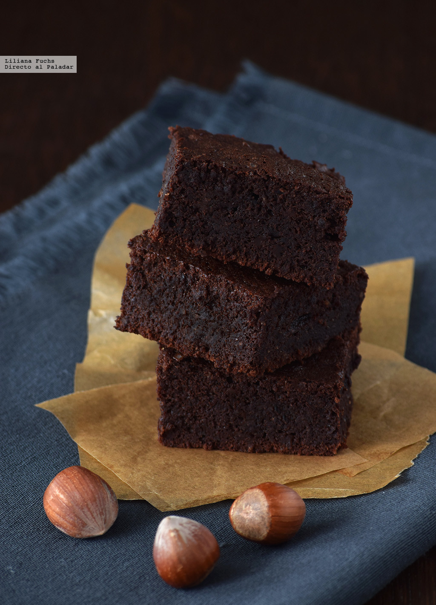

Gluten Free Brownie

Una delicia de chocolate apta para celiacos. El brownie más jugoso
Ingredientes
Chocolate negro -> 150g
Aceite de girasol -> 100ml
Huevos L -> 4
Azúcar -> 130g
Esencia de vainilla -> 5ml
Sal -> 2g
Cacao en polvo -> 25g
Avellana molida -> 50g
Steps
- Precalentar el horno a 170ºC y preparar un molde rectangular o cuadrado, engrasándolo bien o cubriéndolo con papel sulfurizado.
- Derretir el chocolate negro al baño maría o en el microondas, solo si lo controlamos muy bien, para que no se queme. Dejar enfriar un poco.
- Disponer los huevos en un recipiente mediano con el azúcar, añadiendo más si somos muy golosos, o menos si toleramos los dulces menos empalagosos.
- Batir con batidora de varillas hasta que quede una mezcla homogénea, añadir la vainilla y el aceite, y batir con suavidad un poco más.
- Agregar el chocolate derretido, mezclando con una espátula o lengüeta, y añadir por último la avellana molida, la sal y el cacao en polvo tamizado.
- Mezclar suavemente hasta tener una masa sin grumos, homogénea. Verter en el molde, dando unos golpecitos para sacar las posibles burbujas de aire.
- Espolvorear una pizca de escamas de sal gruesa (opcional) y hornear durante unos 20 minutos.
- Comprobar que está en su punto pinchando con un palillo en el centro; debería salir ligeramente manchado, pero no húmedo. Dejar enfriar un poco antes de desmoldar y dejar enfriar completamente sobre una rejilla.